All this questing has landed me on 3D printing. I'm having a blast with this new hobby, and if there's anything you want me to print, just let me know. Here are the things I've started on with my print frenzy.
Print log
Up next — biggest project yet
A five-foot Bandos godsword from RuneScape. Haven't started it yet, but I'm excited as hell. Everything below fits in one hand. This one's going to need both, plus a wall to hang it on.
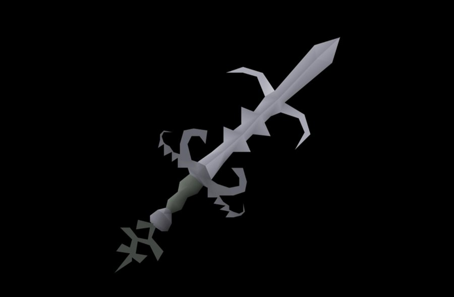
The target. Five feet of it, printed in pieces and somehow made to look like one sword.
First batch
Past the "getting it dialed in" stage and straight into printing everything in sight. Eight down, two of them now missing a leg. Click any photo for the full-size version.
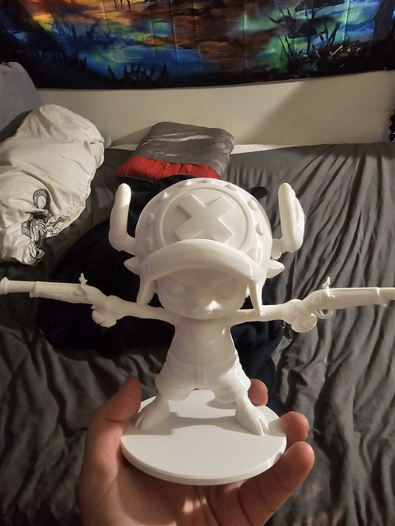
Chopper — Made Chopper with some choppers. Two flintlocks, zero chill.
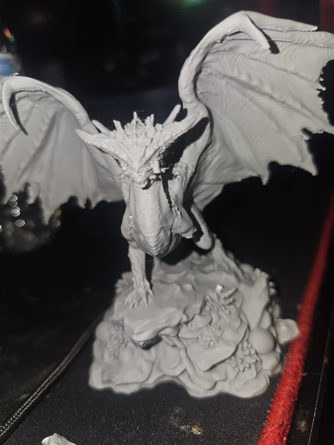
The dragon — Wings, horns, a whole rock to stand on — and of course I broke the leg off it. Printer did its job. I did not. Here’s what it’s supposed to look like.
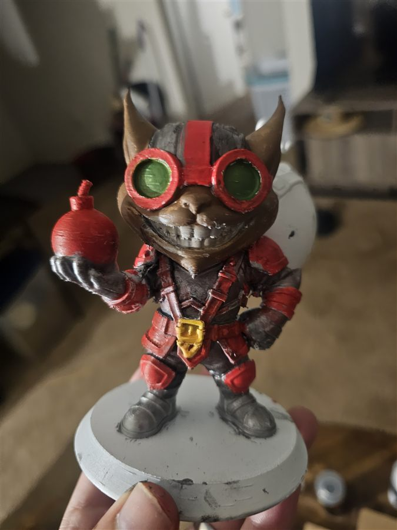
Ziggs — My favorite League of Legends character, so of course he was the first figure I've ever painted. The bomb is red, the grin is terrifying, and I'm calling it a win.
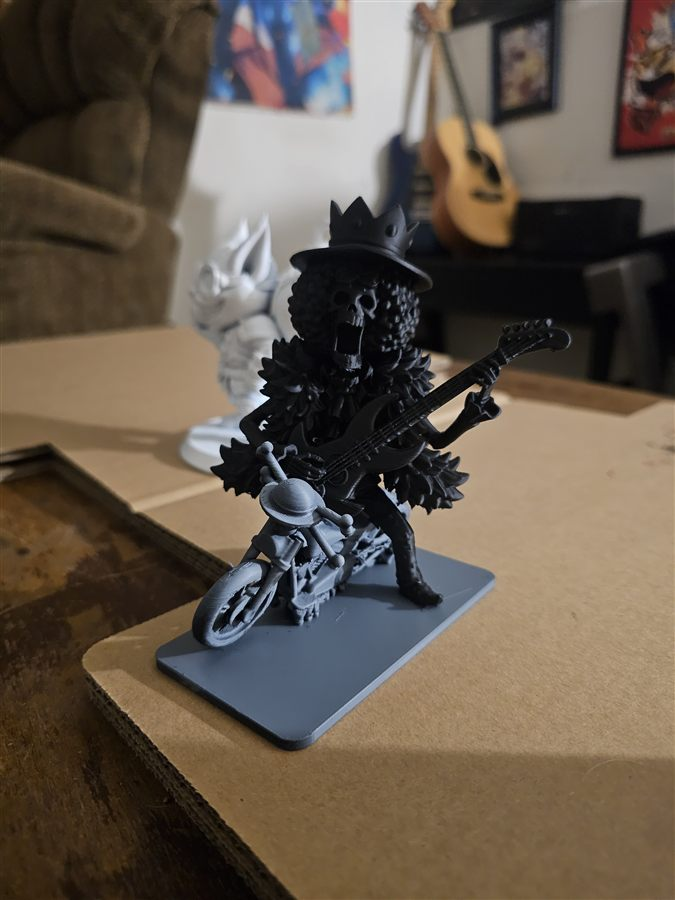
Brook — Also lost a leg, so I threw him on a motorcycle. Problem solved. Yohoho.
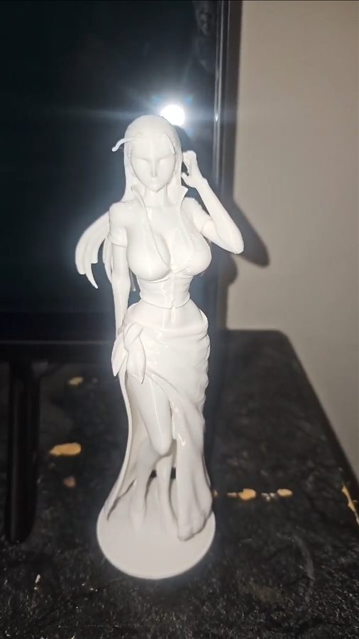
Nico Robin — Third Straw Hat to make it onto the shelf, and the only one so far with all her limbs.
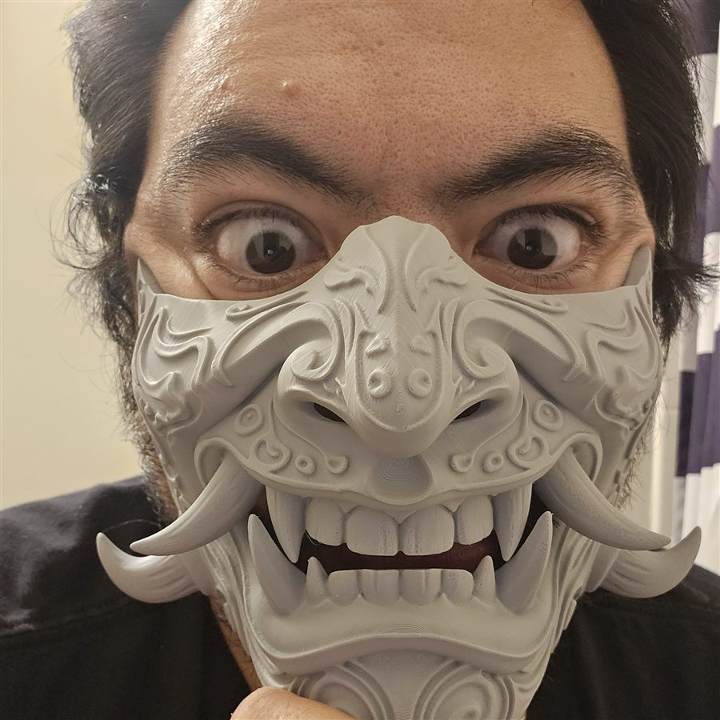
Oni mask — Fits a real face, as demonstrated. The detail on this thing is ridiculous.
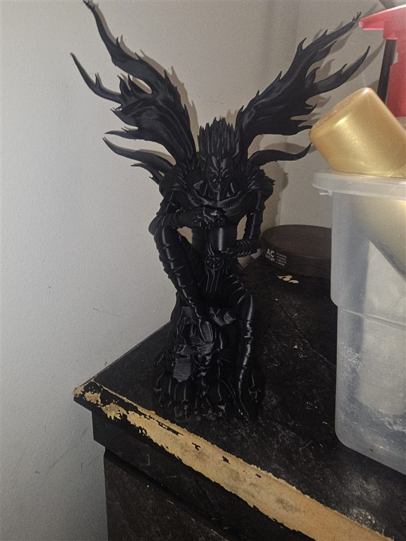
Ryuk — Black filament, spiky everything. Haven't left him an apple yet, so I'm probably on borrowed time.
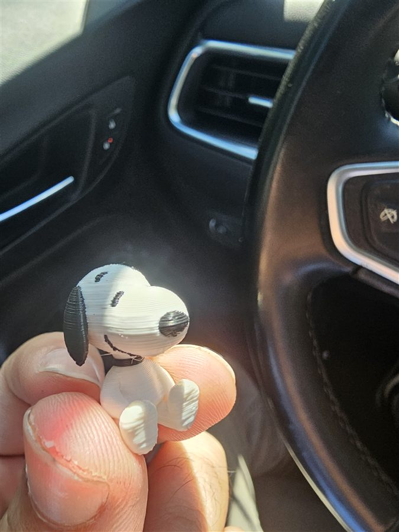
Snoopy — Small enough to ride along in the SUV on route. Best coworker I've had.
What they're supposed to look like
Mine are still bare filament. These are the painted versions from the model designers — not my work, just the bar I'm aiming for now that Ziggs proved I can hold a brush.
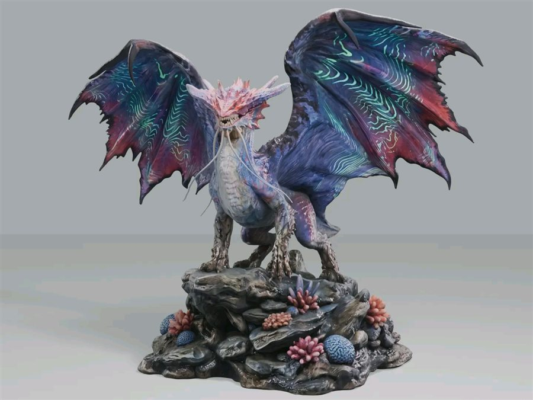
The dragon, painted — Same model as mine up top, back when it had all its legs. Mine is gray and one leg short. This is the goal.
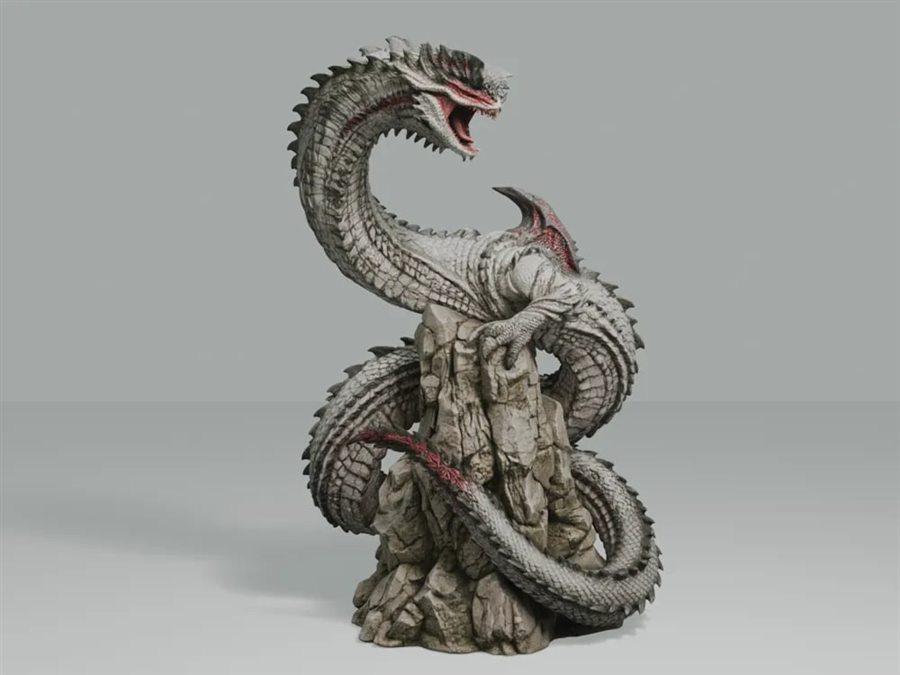
The serpent, painted — Already printed, sitting bare on the shelf. Painted, it's this.
Got something I should print?
New to this, so I'm open to whatever — a good beginner project, a model that's secretly a nightmare to print, doesn't matter. Send it over.